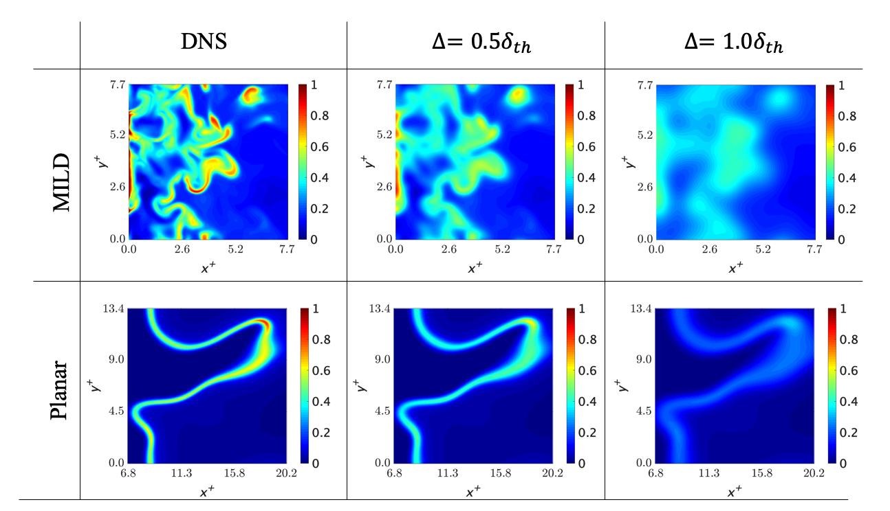

Goal of the research
The increasing global demand for energy is now creating a need for more environmentally friendly combustors with high efficiency and low environmental impact. Moderate or Intense Low-oxigen Dilution (MILD) combustion is attracting possibility as a new technology to achieve this. MILD combustion realizes high efficiency and stable combustion, and can significantly reduce the amount of nitrogen oxides emitted compared to conventional combustion.
The figure below shows the reaction rate distributions of a Planar flame (plane turbulent flame), which is a normal combustion form, and MILD combustion. MILD combustion is a complex combination of auto-ignition and interference flames in addition to the propagating flame, which is a common flame form. Therefore, the reaction zone is more widely distributed and complicated.
Numerical thermo-fluid simulation is effective for the development of combustors with this complicated combustion configuration. Large Eddy Simulation is an effective method for this purpose. However, there is no model with a sufficient system for MILD combustion. Therefore, it was necessary to clarify the MILD combustion field for the development of this model.
Result
Principal Component Analysis was used for the analysis. Principal component analysis is a data analysis method that can mathematically reveal the characteristics of the data to be analyzed and the contributions of each variable to the phenomena. Three types of MILD combustion (A1, A2, B1) and one type of Planar flame (C) were filtered to Gaussian filtering with different filter sizes for the analysis. The following eight different physical quantities were calculated and their contributions to the phenomena were found to be specific to each combustion type.
These two graphs show the contribution of the rigid body rotation of the fluid to the phenomena over filter size. In the first principal component on the left side, both of them are monotonically increasing, while in the second principal component, only the Planar flame is monotonically increasing. This indicates that the two combustion modes are predominantly different in the rigid body rotation of the fluid.
In order to examine the direct effect of the rigid body rotation on the reaction rate, the correlation of the related physical quantities was investigated.


The left figure shows Spearman's correlation coefficients between scalar dissipation rate and chemical reaction rate, and the right figure shows coefficients between rigid body rotation motion and chemical reaction rate. Here, it is known from past studies that there is a strong correlation between chemical reaction rate and scalar dissipation rate in combustion phenomena.
The left figure shows that there is a very strong correlation between the two in the plane turbulent flame, while in the MILD combustion, the correlation is smaller than that in the plane turbulent flame,. Therefore, it is considered that there are physical quantities other than the scalar dissipation rate that govern the chemical reaction rate.
The correlation coefficients between the chemical reaction rate and the rigid-body rotational motion, shown in the right figure, are negative and monotonically decreasing in the plane turbulent flame. However they are relatively large and positive in the MILD combustion and the correlation coefficients increase with the filter size. Therefore, it is suggested that there is a direct relationship between the rigid-body rotational motion and the chemical reaction rate in the MILD combustion.
Inside and outside of the rigid rotational motion of the fluid, mass and heat transport is suppressed. Since the auto-ignition phenomenon is a characteristic feature of MILD combustion and its auto-ignition delay time depends on temperature and mass loss, the suppression of this transport is thought to promote the auto-ignition phenomenon. Outside of the rotation, the flame interference is also considered to be generated by the rotation, which contributes to the flame chemical reaction.